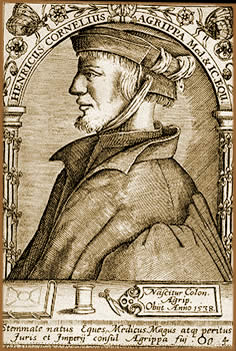

Heinrich Cornelius
Agrippa von Nettesheim foi um dos mais significativos ocultistas
da história da humanidade, especialmente no período
renascentista. Porém, foi também médico,
astrólogo, teólogo, escritor, alquimista, soldado
e outras tantas ocupações. Seu nome é referenciado
em diversos compêndios e citado por inúmeros autores
em tratados esotéricos e estudos herméticos. No
entanto, a história recente parece não ter atribuído
o devido valor a sua contribuição e seu nome fica
projetado em segundo plano, ocultado por personagens tão
brilhantes como Paracelso,
Eliphas Levi, Saint
Germain, entre outros.
Vida,
Viagens e Magia
Heinrich Cornelius nasceu na cidade
de Colônia, Alemanha, em 14 de setembro de 1486. Adotou
o nome Agrippa em uma homenagem ao fundador de sua cidade e teve
uma educação privilegiada na qual pôde estudar
idiomas, direito e ciências. Matriculou-se na Universidade
de Artes de Colônia em meados de 1499. No entanto, não
atingiu graduação na maior parte de sua vida acadêmica.
Nos
primeiros anos do século XIV, em Paris, adotou o nome von
Nettesheim, o qual atribuía-lhe uma certa condição
de nobreza. Neste mesmo período, juntamente a um grupo
de estudantes ocultistas, fundou uma sociedade que se dedicava
ao estudo da cabala, astrologia
e diversos ramos de magia.
Esteve na Espanha entre 1507 e 1508. Em Dôle, no ano de
1509, trabalhando como professor de Hebreu e Teologia, Agrippa
reuniu alguns equipamentos e material necessário para dar
início a uma nova área de pesquisa: alquimia.
Nesta época, foi acusado de herege devido seu comportamento
e abordagem como professor. Ainda esteve na Itália atuando
no grupo militar do Imperador Maximilian.
Os próximos anos de sua vida
são dedicados ao estudo e prática de Grande Obra.
No entanto, não há registro de nenhum feito considerável,
apesar de ter viajado pela Europa e ter acumulado uma significativa
experiência ocultista durante este período. Em 1510,
mantendo contato com Johannes Trithemius, deu início ao
livro De Philosofia Occulta. Porém, seguindo a
sugestão do próprio Trithemius, decidiu ocultar
este trabalho para evitar mais perseguições por
parte da Igreja. No ano seguinte, retornou à Colônia
e integrou o corpo militar.
Na Universidade de Turim, em 1516,
dissertou sobre teologia baseadas nas epístolas de São
Paulo. Três anos mais tarde, em Metz (França), atuou
como "advogado" de defesa de uma mulher acusada de feitiçaria
pelo inquisidor local. Agrippa venceu a causa e ganhou fama.
Em 1520, na cidade de Genebra,
passa a atuar com medicina através de ervas e poções
elaboradas por ele mesmo. Neste período entra em contato
com a doutrina do luteranismo e passa a acompanhá-la com
interesse. Pouco tempo depois, em 1524, é convidado a ocupar
a condição de médico da Rainha Mãe
da corte do Rei Francis, na cidade de Lyon, França; e torna-se
astrólogo da corte.
Porém, Agrippa foi abandonado
pela corte quando, em uma interpretação astrológica,
previu a queda do Reino. Então, desprezado pela nobreza
de Lyon, vaga até chegar a Antuérpia e dar continuidade
as suas atividades medicinais. Lá, após obter fama
curando os cidadãos afetados pela peste, é impedido
pelas autoridades de dar prosseguimento às atividades medicinais
por não dispor de licença legal. Em seguida passa
a atuar como historiador da corte do Rei Charles V. No entanto,
em momento algum obteve muita prosperidade econômica.
No ano de 1527, concluiu seu trabalho
De incertitudine et vanitate scientiarum. Esta obra é
uma reunião de referências católicas combinadas
com filosofia e ocultismo; mas, segundo o autor é uma "sátira
da tristeza da ciência". Em 1529, compilou o tratado
de magia intitulado De Philosofia Occulta iniciado em
1510. De Philosofia Occulta é baseado em textos
hebraicos e gregos com influência do neoplatonismo, no qual
afirmava que a melhor forma de atingir a essência divina
era através das práticas mágicas. Outras
obras relevantes de cunho ocultista-filosófico são
Libellus de sacramento matrimonii e De nobilitate
et præcellentia feminei sexus declamatio. Além
de um trabalho no qual exaltava a nobreza e o poder do sexo feminino.
Muda-se para Bruxelas em 1531 e
a partir de meados de 1533, os registros sobre os fatos de sua
vida tornam-se mais escassos. Sabe-se que Agrippa continuou sendo
perseguido pelos inquisidores e por seus desafetos que influenciaram
o Rei Charles V a condená-lo à morte sob a acusação
de heresia. Entretanto, consegue fugir para a França. Lá,
é capturado por soldados de Francis devido à mágoa
de sua previsão astrológica elaborada anos antes.
Através de sua influência no reino, consegue sua
libertação e parte rumo à Lyon.
Agrippa nunca chegaria à
Lyon. Há registros de que fora visto pela última
vez na cidade de Grenoble em fevereiro de 1535 e que seu corpo
repousa em um monastério da região. Posteriormente,
no ano de 1600, uma edição bastante robusta de suas
obras foi publicada em Lyon.
Divagações
e Citações
Tanto sua obra,
contendo além dos compêndios citados, outros tantos
tratados que influenciaram posteriormente os estudos do astrólogo
inglês John Dee e do teólogo Giordano Bruno, quanto
sua vida são repletas de lacunas. Grande parte do que é
conhecido sobre Agrippa é baseado em registros autênticos
feitos por ele mesmo ao longo de seus dias.
Esse vácuo
biográfico permite especulações que atribuem
a sua pessoa, por exemplo, a autoria do Heptameron
e uma série de divagações sobre sua conduta
pessoal e profissional, como várias detenções
em virtude de ofensas criminais, dívidas financeiras e
heresia.
De qualquer
forma, a pessoa de Heinrich Cornelius Agrippa von Nettesheim desperta
uma atmosfera enigmática. Talvez, a mesma atmosfera que
levou Mary
Shelley a citá-lo em seu clássico Frankenstein,
que inspirou Goethe
em sua peça Fausto e induziu J. K. Rowling a incluí-lo
na série Harry Potter. E, certamente, a mesma
aura misteriosa que faz seu nome e sua figura serem invocadas
mais de quinhentos anos depois de seu nascimento.